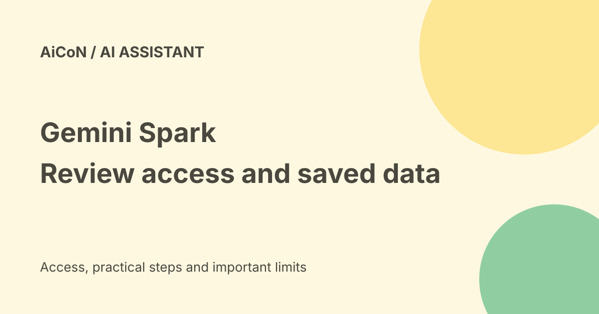

Gemini Spark in India: access, background tasks and saved data
Gemini Spark can work on tasks and schedules through connected apps and browsers. Google announced expansion to India, but actual access still depends on your account and current eligibility. Its remote tasks can run while a device is off; local-browser tasks need the device awake.

What Spark does
Google describes an agent for multi-step tasks and continuing schedules, using connected apps, chats, websites and other available information. A task is one piece of work; a schedule starts work later or when a condition is met; a skill records a reusable way to do something.
It can help with inbox summaries or document organisation. Described capabilities are not proof that it can finish every booking, research task or account change. We did not activate Spark or test a personal account.
Current access requirements
| Age | 18 or older. |
|---|---|
| Account | Current help requires a personal Google Account and excludes work/school sign-in for now. |
| Plan | Google AI Pro or Ultra. |
| Activity | Keep Activity must be on. |
| Surfaces | Gemini mobile app, Mac app and web app listed. |
The current help says availability wherever Gemini Apps are supported except the EEA, Nigeria, Switzerland and UK. The India announcement says Pro access was expanding; the landing page still warns access and compatibility vary. Check the actual account rather than assuming a public page means the feature is enabled.
Landing-page references to select business users do not override the help page's current personal-account requirement. Organisations should verify their own supported product and admin terms.
India price and Jio offer
The archive quoted Rs 1,950/month for Pro. The fetched current plan material did not establish a reliable direct Pro checkout price for this guide, so that older amount is not repeated as a current quote. Check the official plan page, final renewal price and taxes before paying.
Jio's current offer describes 18 months of Pro for eligible adult retail users maintaining an active unlimited 5G plan of Rs 349 or more. That does not specifically prove Spark entitlement on a particular promotional account. The offer's Pro membership and Spark's account access are separate checks.
Remote versus local browsing
Current help says local Chrome use requires the computer and Chrome awake. A remote browser is a separate browser, and tasks there can continue when your device closes. Some stages, including sign-in, can pause until you take over.
This is narrower than saying every job keeps working when every device is off. A task may depend on a local app, login, supported site or user decision.
Connections and privacy
The landing page says Google app connections are off by default. Help names Workspace tools and warns that information from chats or connected sources may be shared with websites during browsing. Review what a task can read and disclose before connecting personal records.
Spark requires Keep Activity on. Read Gemini's current privacy notice for activity, review and data-use controls rather than assuming a paid plan means no retained data or no model-improvement processing.
Saved remote data
Help says remote browser cookies, including authentication information, are saved for later sessions. Remote code-execution files are also saved. Spark settings have separate controls to delete remote browser data and remote code-execution data.
Turning Spark off deletes those remote stores according to help, but does not erase local Chrome data or all tasks, threads and files it created. Cancelling a qualifying subscription can pause or disable features while retaining work. Turning off access is not the same as deleting everything.
A careful first task
- Confirm account eligibility and review activity settings.
- Connect only the apps needed for a harmless task.
- Ask for a summary or draft before allowing external effects.
- Inspect the plan and progress, including chosen websites.
- Review recipients, content, amounts and edits before confirmation.
- Stop or take control if the work differs from your intent.
- Delete remote session data after a sensitive session and remove unused access.
Help says certain actions request confirmation, not that every possible change always does. It specifically allows some bulk private Google Tasks actions without confirmation. Review the request itself.
Custom apps are a different eligibility check
The custom-MCP help separately requires US access for that connection route. MCP is a connector protocol. General Spark eligibility in India does not automatically unlock every custom connector, and Google warns it does not secure third-party MCP servers.
Frequently asked questions
Is Spark a free feature for everyone?
No. Current help requires Pro or Ultra and other conditions.
Will local Chrome work with the laptop off?
No. Remote tasks have a separate route with limits.
Is Jio Spark access confirmed here?
No personal promotional account was tested.
What changed since the earlier post?
This guide adds personal-account and activity requirements, current region wording, local/remote limits and explicit saved-data cleanup. It keeps price and promotional entitlement unknown where not verified.
Sources: Current access and task help · India announcement · Product page · Gemini privacy notice · Jio offer · Custom-app eligibility. Checked 8 October 2026.